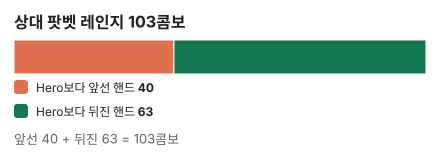
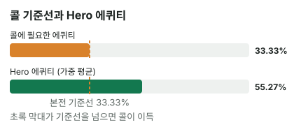

안녕하세요. 오늘은 탑페어인데 키커가 약한 핸드로 큰 벳을 맞는 장면이에요.
"K는 맞았는데… 상대가 더 좋은 K면 어떡하지?" 이럴 때 보통 떠오르는 답은 둘이에요. "그래도 탑페어니까 콜" 아니면 "키커가 약하니까 폴드". 둘 다 핸드 이름으로 정하는 거예요. 오늘은 핸드 이름 대신 상대가 이 벳을 어떤 핸드로 하느냐로 정하는 법을 처음부터 따라가 볼게요.
이 글에서 배울 것
- 상대 레인지를 "Hero보다 앞선 핸드 / 뒤진 핸드" 두 묶음으로 나누고 콤보로 세는 법
- 두 묶음의 에퀴티를 콤보 수만큼 무게를 둬서 합치면 전체 에퀴티가 되는 원리
- 탑페어 약한 키커에서 키커가 실제로 결과를 바꾸는 상대가 누구인지, 그리고 플랍 콜이 왜 "이번 결정 기준"일 뿐인지
오늘의 핸드
Hero (BB 자리 · 스택 100BB)


프리플랍
상대(버튼, BTN) 2.5BB 오픈 → SB 폴드 → Hero 콜
팟 5.5BB
플랍 · 팟 5.5BB


Hero 체크 → 상대 5.5BB 벳(팟벳) → Hero는 콜? 폴드?
Hero는 K 원페어, 보드에서 가장 높은 카드와 짝이 맞은 탑페어예요. 다만 키커(같은 페어끼리 붙을 때 승부를 가르는 나머지 카드)가 7이라 약해요.
결론부터 말할게요. 오늘 가정한 상대라면 이번 결정 기준으로 콜이 이득입니다.
남은 베팅이 있어 실제 결과는 달라질 수 있어요. 그래서 오늘은 금액(EV) 대신 에퀴티 vs 필요 에퀴티로만 판정해요.
왜 그런지 4단계로 볼게요. 핵심은 2단계, 상대 레인지를 둘로 나누는 부분이에요.
1단계. 필요 에퀴티 — 합격선부터
필요 에퀴티 = 콜해서 본전이 되려면 가져와야 하는 몫이에요. 시험으로 치면 합격선이죠(공식은 B06, 합격선 비유는 B14).
필요 에퀴티 = 5.5(Hero 콜) ÷ (5.5(원래 팟) + 5.5(상대 벳) + 5.5(Hero 콜)) = 5.5 ÷ 16.5 = 33.3%
팟벳이면 3번 중 1번이에요. 3번 콜해서 1번만 이겨도 본전이라는 뜻이죠.
이제 남은 질문은 하나예요. K♦7♣이 이 상대에게 33.3%보다 많이 가져오느냐.
2단계. 상대 레인지를 둘로 나누기 (가정 레인지 기준)
어디서 출발하나
출발점은 I27에서 만든 같은 보드, 같은 버튼 오픈 레인지예요. 버튼이 오픈한 핸드 전체 중에서, 이 상대가 팟벳까지 하는 핸드만 남긴다고 가정할게요.
이 상대는 강한 핸드와 드로우, 그리고 약한 페어·A 하이 중 일부로 크게 건다고 볼게요. QQ~TT·AQ~AT·55·33·22는 체크한다고 정했어요.
솔직히 말하면 이 체크/벳 구분은 "어떤 기준이면 딱 이렇게 나뉜다"는 규칙이 아니라 연습용으로 정한 가정이에요. 88은 걸고 55는 체크하는 것처럼 깔끔하지 않은 부분도 있어요. 실제 상대는 사람마다 다르게 고르니까, 오늘은 "이렇게 고르는 상대라면"으로 읽어 주세요.
① Hero보다 앞선 핸드 — 40콤보
| 핸드 | 콤보 | 왜 이 숫자? |
|---|---|---|
| AA | 6 | 보드·Hero 손에 A 없음 |
| KK | 1 | 남은 K는 K♥·K♣ 2장뿐 |
| AK | 8 | K 2장 × A 4장 |
| KQ | 8 | K 2장 × Q 4장 |
| KJ | 8 | K 2장 × J 4장 |
| KTs | 2 | 같은 무늬 K·T는 하트·클럽만 남음 |
| K9s | 1 | 남은 건 K♣9♣ 하나 |
| 99 | 3 | 셋 |
| 44 | 3 | 셋 |
💡 빨리 세는 팁: K가 보드에 1장, Hero 손에 1장 → 남은 K 2장, 그래서 K와 다른 숫자는 2 × 4 = 8 (자세한 건 I32)
AK·KQ·KJ·KT·K9는 같은 K 페어에 키커만 더 높은 핸드예요. AA는 오버페어, 99·44는 셋이고요.
② Hero보다 뒤진 핸드 — 63콤보
| 묶음 | 핸드 | 콤보 | 왜 이 숫자? |
|---|---|---|---|
| 거트샷 드로우 | QJ, QTs, JTs | 16, 4, 4 | 보드·Hero 손에 없는 카드 |
| 9 페어 | T9s, 98s, A9s | 3씩 | 9♥가 보드에 있어 하트 무늬 빠짐 |
| 9보다 낮은 포켓페어 | 88, 77, 66 | 6, 3, 6 | 77은 Hero의 7♣ 때문에 3 |
| 바텀 페어 | A4s | 3 | 4♦가 보드에 있어 다이아 빠짐 |
| A 하이 | A5s, A3s, A2s | 4씩 |
거트샷은 가운데 한 장이 비어 있는 스트레이트 드로우예요. QJ는 T만 오면 9-T-J-Q-K가 되죠. 바텀 페어는 보드의 가장 낮은 카드와 짝이 맞은 페어고요.
이 핸드들은 지금 Hero의 K 페어에 모두 지고 있어요. 상대가 이런 핸드로도 크게 거는 사람이라고 가정한 거예요.

3단계. 묶음별 에퀴티와 전체 에퀴티
| 묶음 | 콤보 | 그 묶음 상대 Hero 에퀴티 |
|---|---|---|
| 앞선 핸드 | 40콤보 | 약 11.54% |
| 뒤진 핸드 | 63콤보 | 약 83.04% |
| 전체 | 103콤보 | 약 55.27% |
표 읽는 법
앞선 핸드를 만나면 Hero는 약 11.54%밖에 못 가져가요. 턴·리버에 7이 와서 투페어가 되는 것 같은 좁은 길만 남거든요.
반대로 뒤진 핸드를 만나면 약 83.04%를 가져가요. 상대가 드로우를 맞추거나, 9·4 같은 카드로 투페어·셋을 만들거나, A 하이 핸드가 A를 맞추는 경우에 지니까요. 뒤진 묶음에는 A9s·A5s·A4s·A3s·A2s처럼 A를 든 핸드가 꽤 있어서, A가 오는 길도 무시할 수 없어요.
그리고 뒤진 핸드가 63콤보로 더 많아요. 그래서 전체로 합치면 Hero가 약 55.27%로 앞서요.
4단계. 비교 — 이번 결정 기준

약 55.27% > 33.3%라 이번 결정 기준 콜이에요.
다만 이건 리버까지 추가 베팅이 없다고 본 비교예요. 실제로는 턴·리버에 베팅이 또 있어요. 상대가 턴에 또 크게 걸면, Hero는 그때 남은 레인지로 이 비교를 다시 해야 해요.
왜 그럴까: 전체 에퀴티는 "묶음 에퀴티의 콤보 가중 평균"이에요
계산은 끝났어요. 이제 왜 55.27%라는 숫자가 나왔는지 한 겹 더 벗겨 볼게요.
전체 에퀴티는 두 묶음의 평균인데, 그냥 평균이 아니에요
앞선 핸드 상대 약 11.54%, 뒤진 핸드 상대 약 83.04%. 두 숫자를 그냥 반반 평균하면 둘의 한가운데, 절반에 조금 못 미치는 값이 나오겠죠. 그런데 실제 전체 에퀴티는 그보다 높은 약 55.27%예요.
이유는 상대가 두 묶음을 똑같은 횟수로 들고 있지 않아서예요. 상대 손에 들 수 있는 103가지 조합 중 40가지가 앞선 핸드, 63가지가 뒤진 핸드예요. 그러니 평균을 낼 때도 뒤진 핸드 쪽에 63만큼, 앞선 핸드 쪽에 40만큼 무게를 둬야 해요. 이게 콤보 가중 평균이에요.
숫자로 직접 해 보면 이래요.
전체 에퀴티 = (40(앞선 콤보) × 11.54 + 63(뒤진 콤보) × 83.04) ÷ 103(전체 콤보) = 55.27, 즉 약 55.27%
말로 풀면, 이 상황이 103번 온다면 그중 40번은 앞선 핸드를, 63번은 뒤진 핸드를 만난다는 거예요. 40번은 조금만 가져오고 63번은 많이 가져오니, 전체 평균은 많이 가져오는 쪽으로 기울어요.
이게 무슨 뜻이냐면, 결론을 정하는 건 "앞선 핸드가 있느냐"가 아니라 "앞선 핸드와 뒤진 핸드가 각각 몇 콤보냐"라는 거예요. 앞선 핸드가 무섭게 많아 보여도, 뒤진 핸드가 그보다 많으면 콜이 남아요.
QJ 하나가 16콤보라는 것
뒤진 핸드 63콤보 중 QJ 혼자 16콤보예요. 수딧과 오프수트를 모두 포함하고, 보드와 Hero 손에 Q·J가 하나도 없어서 4 × 4 = 16이 다 살아 있거든요.
반대로 앞선 핸드 중 KK는 1콤보, K9s도 1콤보뿐이에요. 이름만 들으면 "KK나 셋이면 어떡하지?" 싶지만, 실제로 상대 손에 있을 가능성은 아주 작아요.
무서운 핸드는 이름이 크고, 흔한 핸드는 콤보가 커요. 이 차이를 숫자로 보게 해 주는 게 콤보 세기예요.
Hero의 K♦가 상대 K를 줄여요
앞선 핸드 표를 다시 보면 AK가 8콤보예요. 보드에 K가 없었다면 A 4장 × K 4장 = 16이었겠죠. 보드에 K♠, Hero 손에 K♦가 있어서 남은 K가 2장이라 절반으로 줄었어요.
이렇게 내가 든 카드가 상대의 콤보를 줄이는 효과를 블로커라고 해요(고급 E01에서 자세히 다뤄요). 탑페어를 들고 있으면 상대의 "더 좋은 탑페어"는 저절로 줄어들어요. 약한 키커라도 K 자체가 상대 K를 막아 주는 역할은 똑같이 해요.
그럼 약한 키커는 문제가 아닐까? — 아니에요
키커는 같은 페어끼리 붙을 때만 승부를 갈라요. 앞선 40콤보를 다시 보면 AK·KQ·KJ·KTs·K9s, 콤보로 8 + 8 + 8 + 2 + 1 = 27이 바로 키커 싸움에서 진 핸드예요. 앞선 묶음의 대부분이 키커 때문에 생긴 거죠. 약한 키커의 위험은 결코 작지 않아요.
그런데도 콜인 이유는 키커 문제가 사라져서가 아니에요. 상대에게 K가 없는 뒤진 핸드가 63콤보로 더 많아서예요. QJ·88·A4s 같은 핸드 상대로는 Hero 키커가 7이든 Q든 상관없이 지금 Hero가 앞서요. 반대로 AA·99·44는 키커가 아무리 좋아도 어차피 지고요.
키커는 판이 진행될수록 더 무거워져요
하나 더 기억할 게 있어요. 상대가 턴에도 계속 크게 건다면, 드로우를 놓친 핸드나 약한 페어는 그만 걸 수 있어요. 그러면 남은 레인지에서 K를 든 핸드의 비율이 올라가요. 플랍에서는 뒤진 핸드에 묻혀 있던 키커 문제가, 베팅이 이어질수록 점점 앞으로 나온다는 뜻이에요.
자주 하는 실수
실수 1. "팟벳 = 강한 핸드"로 읽고 폴드 큰 벳을 맞으면 상대 손에 앞선 핸드만 떠오르기 쉬워요. 하지만 오늘 가정에서 팟벳 레인지는 앞선 핸드 40콤보, 뒤진 핸드 63콤보였어요. 벳 크기는 합격선(33.3%)을 정할 뿐, 상대가 강하다는 증거는 아니에요. 대신 이렇게 해 보세요. "이 크기로 거는 핸드를 앞선 것과 뒤진 것으로 나누면 어느 쪽이 많을까?"
실수 2. 레인지에 드로우·약한 페어가 있는지 안 따지고 콜 반대 방향 실수도 있어요. "탑페어니까 콜"은 뒤진 핸드가 많을 때만 맞아요. 이 결론은 상대가 드로우·약한 페어로도 크게 건다는 가정 위에 서 있어요. 그런 핸드로는 크게 안 거는 상대라면 레인지에서 뒤진 쪽이 빠지고, 전체 에퀴티가 뚝 떨어질 수 있어요. 뒤진 63콤보가 빠지고 나면 남는 건 Hero가 약 11.54%밖에 못 가져오는 앞선 핸드 위주예요. 콜하기 전에 "이 상대가 뒤진 핸드로도 이렇게 거는 사람인가?"를 먼저 물어요.
실수 3. 플랍에서 콜했으니 턴·리버도 따라가기 플랍 콜의 근거 중 큰 부분이 드로우였어요. 뒤진 63콤보 중 QJ·QTs·JTs만 16 + 4 + 4 = 24예요. 그런데 드로우는 턴에 맞으면 앞서고, 못 맞으면 상대가 포기할 수도 있어요. 그러면 턴의 상대 레인지는 플랍과 다른 레인지예요. 플랍 결정은 플랍에서 끝내고, 턴에서는 남은 레인지로 다시 나눠 보세요.
"탑페어인데 키커가 약하면 무조건 조심해야 하는 거 아니에요?"
좋은 질문이에요. 조심은 해야 해요. 상대가 더 좋은 K나 셋으로만 크게 거는 사람이라면 Hero는 대부분 져요. 7이 맞아 투페어가 되는 것 같은 좁은 길만 남죠. 이게 I15에서 배운 도미네이트(키커 싸움에서 크게 밀리는 상황)예요.
하지만 상대가 드로우나 약한 페어로도 크게 거는 사람이라면, 약한 키커도 충분히 콜할 만해요. 핸드 이름보다 상대 레인지의 비율이 답을 정해요.
숫자가 뒤집히는 지점
기준은 "앞선 핸드" 대 "뒤진 핸드"의 콤보 비율이에요. 뒤진 핸드가 레인지에서 빠져 Hero 에퀴티가 필요 에퀴티 33.3% 아래로 내려가면 폴드예요. 상대 벳이 작아지면 필요 에퀴티도 내려가고요. 문제 1·2에서 직접 확인해 보세요.
선생님의 한마디
- 큰 벳을 맞으면 먼저 합격선(필요 에퀴티)부터
- 무서운 핸드 이름이 떠오르면 그 핸드가 몇 콤보인지부터 세기
- "이 상대가 뒤진 핸드로도 이렇게 거나?"를 묻고 나서 콜/폴드
연습 문제 (같은 보드, 같은 Hero 핸드)
학습툴 에퀴티 계산기에는 레인지 입력이 없어요. 정답의 숫자(블로그에서 직접 계산한 값)를 따라가 보고, 학습툴에는 핸드 대 핸드(내 핸드와 상대 핸드 하나, 예: K♦7♣ 대 Q♥J♥)만 넣어 확인해 보세요.
문제 1. 이번엔 다른 상대예요. 이 상대는 드로우·약한 페어로는 크게 안 걸고, 앞선 핸드(40콤보)와 A5s·A4s(4 + 3 = 7)로만 팟벳해요. A5s·A4s 상대 Hero 에퀴티가 오늘 뒤진 묶음과 비슷하다고 보면, 전체 에퀴티는 대략 어디쯤일까요? 합격선을 넘을까요? '왜 그럴까'의 콤보 가중 평균으로 어림해 보세요.
정답 보기
47콤보 중 40콤보가 약 11.54%짜리 앞선 핸드라, 평균은 11.54% 쪽으로 크게 끌려가요. 어림으로도 33.3%에 한참 못 미쳐요. 계산기 값: 레인지 47콤보, Hero 에퀴티 약 21.83% < 33.3% → 폴드. 같은 K♦7♣, 같은 팟벳인데 상대가 무엇으로 거느냐 하나로 결론이 바뀌어요.
문제 2. 또 다른 상대예요. 이 상대는 오늘 레인지에서 드로우(QJ·QTs·JTs)만 빼고 나머지로 팟벳해요. 드로우가 빠지면 Hero에게 불리해질까요? 콜일까요, 폴드일까요?
정답 보기
레인지 79콤보(103 − 24), Hero 에퀴티 약 47.79% > 33.3% → 콜. 드로우가 빠져 에퀴티는 내려갔지만, 약한 페어와 A 하이가 아직 많이 남아 합격선 위예요. 뒤진 핸드가 얼마나 빠지느냐가 중요하다는 걸 문제 1과 비교해 보세요.
핵심 정리
- 탑페어 약한 키커의 콜/폴드는 핸드 이름이 아니라 상대 레인지의 앞선 핸드 대 뒤진 핸드 콤보 비율이 정해요
- 전체 에퀴티 = 묶음별 에퀴티를 콤보 수만큼 무게를 둬서 평균한 값이에요
- 이름이 무서운 핸드(KK·셋)는 콤보가 적고, 드로우(QJ 16콤보)는 콤보가 많을 수 있어요
- 내가 든 K는 상대의 K 콤보를 줄여 줘요(블로커)
- 약한 키커의 위험은 K를 든 상대에게서 나오고, 베팅이 이어질수록 그 비율이 커져요
정리하며
오늘은 K♦7♣ 탑페어 약한 키커로 플랍 팟벳을 맞았어요. 합격선 33.3%를 구하고, 상대 팟벳 레인지를 앞선 40콤보와 뒤진 63콤보로 나눴죠.
앞선 핸드에는 크게 지지만 뒤진 핸드가 더 많아서, 콤보 가중 평균으로 Hero가 약 55.27%를 가져가요. 그래서 이 상대에게는 콜이에요. 같은 핸드라도 상대가 뒤진 핸드로 크게 안 거는 사람이라면 답이 달라진다는 것도 기억해 주세요.
다음 글 I29에서는 턴·리버 카드가 나올 확률 자체를 다뤄요. 오늘 "7이 오면 투페어", "T가 오면 상대 스트레이트"처럼 말로만 한 길이 실제로 얼마나 자주 열리는지, 한 장 볼 때와 두 장 볼 때로 나눠 계산해요.
AI 작성 · 숫자는 계산 검증 (플랍 이후 전부 세기) · 가정 레인지 기준 (솔버 결과 아님) · 이번 한 번의 결정 기준(턴 이후 베팅은 계산에 넣지 않음)